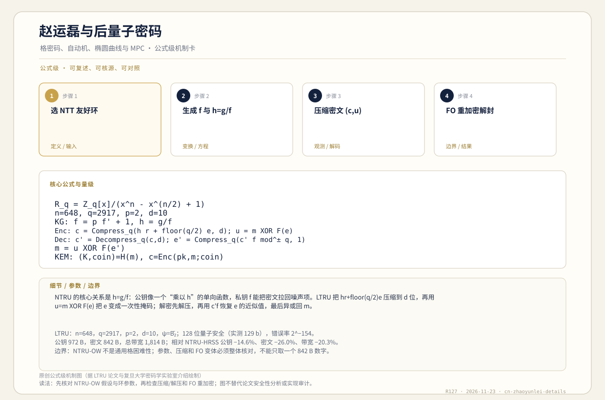

原理与机制
中国密码史：赵运磊与后量子密码（Zhao Yunlei and Post-Quantum Cryptography）。### NTRU 关系与压缩密文
LTRU 在 (R_q=\mathbb{Z}_q[x]/(x^n-x^{n/2}+1)) 上取 (f=pf'+1) 与 (h=g/f)。公钥 (h) 是“乘以 h”的单向映射，私钥 (f) 能把它拉回噪声项。加密计算 (c=\operatorname{Compress}_q(hr+\lfloor q/2\rfloor e,d)) 与 (u=m\oplus F(e))；解密先解压 (c)，再用 (e'=\operatorname{Compress}_q(c'f\bmod^{\pm}q,1)) 恢复 (e) 的近似，最后 (m=u\oplus F(e'))。### 从 PKE 到 KEM
LTRU.PKE 先经 ACWC₀ 转换得到 IND-CPA，再用 (\mathrm{FO}_m^{\perp}) 得到 IND-CCA 的 LTRU.KEM：封装时 ((K,\mathrm{coin})=H(m))，解封时重加密并比较密文。这里的“只用 NTRU-OW、不用纠错码”是设计主张，不是对所有 NTRU 变体的统一结论。

为什么重要
后量子 KEM 的难点不只是“格问题难”，而是公钥、密文、压缩、错误率、FO 变体和实现效率要同时成立。LTRU 给出一个 128 位量子安全参数集：n=648、q=2917、p=2、d=10，公钥 972 B、密文 842 B、错误率 2^−154，并把“仅 NTRU-OW、无纠错码”作为可检验的设计选择。
应用与实例
1.先确认假设是 NTRU-OW 还是更弱的 NTRU 变体；不要把“只用 NTRU-OW”当成“只依赖格”。2.核对环 (x^n-x^{n/2}+1)、n=648、q=2917、p=2、d=10 是否成套。3.加解密两侧的 Compress/Decompress 必须配对，centered mod 的取模约定必须一致。4.KEM 必须做 FO 重加密比较与哈希域分离。5.记录错误率、安全强度估算方法和实现平台；尺寸比较要在同一安全级别下进行。### 不能怎么用
不能用 842 B 密文推断其他参数集；不能把 2^−154 当成所有消息与所有实现的实际错误率；不能忽略压缩带来的解密边界；不能把论文的 AVX2 数字当成未审计平台的性能承诺。
边界与攻击面
1.假设不成立：NTRU-OW 的具体版本、参数与攻击面必须匹配；换成一般 NTRU 或 MLWE 就不是同一条目。2.压缩边界：d 太小会增加解码错误，d 太大会损失尺寸优势。3.取模约定：centered mod±q 与普通 mod q 混用会直接破坏解密。4.FO 变体：不同的 FO 转换、哈希域分离和重加密检查不能互换。5.实现边界：侧信道、故障注入、内存访问和随机数质量不在公式内。
历史与背景
赵运磊 2004 年获复旦大学软件与理论博士学位，现任复旦大学特聘教授、密码学实验室负责人，研究覆盖后量子密码、区块链、密码协议与密码工程。LTRU 论文以 n=648、q=2917 的 NTT 友好环给出 128 位量子安全参数集，并报告相对 NTRU-HRSS 的尺寸与 AVX2 实现优势。
逐步示例与核验
事件时间线模型
背景 → 过程 → 结果 → 争议。背景写此前技术/制度；过程写可核参与者与时间；结果写后续标准、机器、课程或政策；争议写二手叙述与一手材料的差距。
参考出处
- Wikipedia search entry for 赵运磊与后量子密码. https://zh.wikipedia.org/w/index.php?search=%E8%B5%B5%E8%BF%90%E7%A3%8A%E4%B8%8E%E5%90%8E%E9%87%8F%E5%AD%90%E5%AF%86%E7%A0%81
- 《密码简史：穿越远古 展望未来》（杨义先、钮心忻，电子工业出版社，2020，ISBN 9787121398711）. https://book.cppinfo.cn/Encyclopedias/home/index?id=3730464